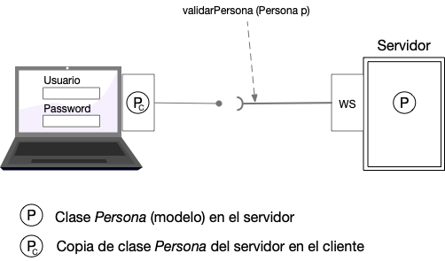

En esta práctica realizaremos el login de una persona a través de Servicio Web utilizando SOAP. Como lo muestra la figura, lo que se pretende es hacer dos aplicaciones:
- Proveedor del Servicio.- Aplicación Web que expone el servicio validarPersona.
- Esta aplicación será desarrollada como DynamicWebProyect y expondrá los servicios a través de SOAP.
- El nombre de esta aplicación será: ProveedorWebSoap
- Consumidor del Servicio.- Aplicación (de escritorio) que consume el servicio Web validarPersona expuesto por el Servidor.
- Esta aplicación será desarrollada como Proyecto Java (escritorio)
- El nombre de esta aplicación será: ConsumidorWebSoap